1. Definiciones
Para abordar la atención de víctimas de un accidente eléctrico, es necesario, en primer lugar, familiarizarnos con el vocabulario pertinente a la luz de la normatividad vigente; es por ello que a continuación se describen esos términos que ayudarán a la comprensión de los temas aquí abordados.
| 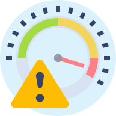 |
Riesgo: |
|
Vulnerabilidad: |
|
| 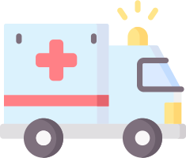 |
Emergencia: |
|
Brigada: |
|
|
Plan de emergencia: |
|
|
Accidente: |
|
|
Atención: |
2. Competencias
En el ejercicio laboral siempre se está expuesto a riesgos que en cualquier momento pueden materializarse; por lo anterior se hace necesario contar con capacitaciones o entrenamientos adecuados para saber qué hacer en el caso de verse involucrado en una emergencia.
2.1 Competencias de las personas involucradas en actividades eléctricas ante una emergencia
A continuación, se muestra la clasificación de las brigadas:
- Brigada básica o clase I.
- Brigada intermedia o clase II.
- Brigada especializada o clase III.
Esta clasificación se ajusta a los análisis de riesgo y actividades propias de cada uno de los sectores energético, petróleo, minero, portuario, químico, eléctrico, hidroeléctrico y otros sectores de alto riesgo existentes, a la luz de la resolución 0256 del 2014, en su artículo 6.3.
Es importante mencionar que cada clasificación de brigada cuenta con un contenido mínimo curricular, el cual se muestra a continuación.
Brigada básica o clase I
| DENOMINACIÓN DEL MÓDULO | HORAS DE CAPACITACIÓN |
|---|---|
| Normatividad | 4 horas |
| Administración de la emergencia | 6 horas |
| Articulación de la brigada con el cuerpo de bomberos | 2 horas |
| Manejo del Plan de Evacuación y Plan de Emergencia | 3 horas |
| Riesgos de seguridad de los brigadistas | 2 horas |
| Comportamiento del fuego | 4 horas |
| Métodos, agentes y equipos de extinción | 4 horas |
| Extintores portátiles bajo la normatividad nacional e internacional | 4 horas |
| Evacuación y transporte de pacientes | 8 horas |
| Procedimiento Operativo Normalizado | 4 horas |
| Total | 41 horas |
Fuente: Resolución 0256 del 2014; Artículo 8.1.
Brigada intermedia o clase II
| DENOMINACIÓN DEL MÓDULO | HORAS DE CAPACITACIÓN |
|---|---|
| Normatividad colombiana | 4 horas |
| Aspectos legales (Marco legal en incendio, salud, rescate y materiales peligrosos) | 4 horas |
| Manejo del Plan de Evacuación y Plan de Emergencia | 8 horas |
| Administración de emergencia | 16 horas |
| Articulación de la brigada con el cuerpo de bomberos | 6 horas |
| Gestión para el control de emergencias | 6 horas |
| Riesgos de seguridad de los brigadistas | 6 horas |
| Prevención e inspección de incendios | 6 horas |
| Comportamiento del fuego | 4 horas |
| Métodos, agentes y equipos de extinción. | 4 horas |
| Extintores portátiles bajo la normatividad nacional e internacional | 4 horas |
| Hidráulica - Conceptos básicos | 4 horas |
| Abastecimiento de agua | 4 horas |
| Mangueras y accesorios para control de incendios | 4 horas |
| Chorros para control de incendios | 4 horas |
| Equipos de protección personal | 4 horas |
| Equipos de respiración autónoma | 4 horas |
| Seguridad en operación | 2 horas |
| Escaleras para operaciones de incendios | 4 horas |
| Técnicas de control de incendios | 4 horas |
| Comunicaciones | 4 horas |
| Sistemas de protección contra incendios | 4 horas |
| Sistemas pasivos de protección contra incendios | 6 horas |
| Simulaciones y simulacros | 6 horas |
| Primer respondiente en materiales peligrosos | 24 horas |
| Primer respondiente a emergencias médicas | 30 horas |
| Reanimación Cardio Pulmonar (RCP) | 8 horas |
| Primer respondiente en rescate (obligatorio curso de alturas avanzado) | 16 horas |
| Procedimiento Operativo Normalizado | 8 horas |
| Total | 208 |
Fuente: Resolución 0256 del 2014; Artículo 8.3.
Brigada especializada o clase III
Se podrá realizar la temática en un periodo máximo de 18 meses por cada brigadista, se encuentran enmarcados como programa de capacitación gradual, y se ajustará al análisis de riesgo y actividades propias de los sectores energéticos, industriales, petroleros, mineros portuarios, eléctricos, hidroeléctricos, comerciales o similares dependiendo de sus características y estructura. Resolución 0256 del 2014; Artículo 8.5.
Así mismo el artículo 8.7 contempla que "cada brigada especializada o clase III deberá contar con personal capacitado y certificado con un tiempo no menor a 320 horas".

¡Importante!
Cada grupo de trabajo o empresa, debe identificar las necesidades específicas de formación ante emergencias según las actividades desarrolladas en el día a día y su criticidad.
2.2 Aseguramiento del lugar de trabajo
Adicional a las competencias que debe contar un trabajador en el caso de responder ante una emergencia, es importante realizar de manera previa al inicio de las actividades de alto riesgo de tipo eléctricas, una verificación en donde se considere el cumplimiento como mínimo de los siguientes aspectos:
| ¿Se tiene autorización escrita o grabada para hacer el trabajo? | SI | NO |
| ¿Se encuentra informado el ingeniero o supervisor? | SI | NO |
| ¿Se han identificado y reportado los factores de riesgo que no pueden obviarse? | SI | NO |
| ¿Se intentó modificar el trabajo para obviar los riesgos? | SI | NO |
| ¿Se instruyó a todo el personal la condición especial de trabajo? | SI | NO |
| ¿Se designó un responsable de informar al área de salud ocupacional, al Comité Paritario o al jefe de área? | SI | NO |
| ¿Se cumplen rigurosamente las reglas de oro? | SI | NO |
| ¿Se tiene un medio de comunicaciones? | SI | NO |
| ¿Se disponen y utilizan los elementos de protección personal? | SI | NO |
Fuente: RETIE; tabla 18.6.

¡Importante!
Cada grupo de trabajo o empresa debe definir los aspectos particulares que requiera asegurar en el desarrollo del ejercicio laboral.
2.3 Plan de ayuda mutua
En muchos casos en donde el grupo de trabajo para realizar las actividades eléctricas en campo es el mínimo (podríamos estar hablando de dos o tres trabajadores) se hacen limitados los recursos en caso de que se requiera atender una emergencia. Bajo este escenario, toma relevancia el poder contar con un plan de ayuda mutua en el frente de trabajo. Es aquí donde se deben sumar todos los esfuerzos y recursos disponibles de las empresas ubicadas en la locación para que, en el caso de presentarse una emergencia, se pueda brindar una oportuna y efectiva respuesta.
La autoridad de área junto con las empresas ejecutoras de las actividades, deben dejar en claro -previo al inicio de las actividades- los recursos disponibles para la atención de emergencias y el rol que cada uno deberá desempeñar.
Un espacio propicio para concretar estos aspectos podría ser las reuniones preoperacionales.
3. Kit de rescate eléctrico
Un kit de rescate eléctrico permite salvar víctimas en el caso de accidentes que se puedan presentar de tipo eléctrico.
Por su volumen y peso los kits de rescate eléctrico pueden ser transportados en vehículos, estos permiten disponer en todo momento de un equipo completo de rescate.
- Peso aproximado de 18 kg.
- Dimensiones aproximadas de 70 x 57 x 24 cm.
- Características del material: dieléctrico.
Algunas recomendaciones para asegurar la idoneidad de los elementos del kit de rescate eléctrico son:
- Evitar golpes o impactos directos.
- No exponerse a ambientes y sustancias corrosivas.
- Verificar antes de cada uso que los elementos estén en buenas condiciones.
- No almacenar en lugares húmedos.
Los elementos que hacen parte de un kit de rescate eléctrico, no tienen fecha de vencimiento específica. La vida útil será determinada por múltiples factores que dependen del medio ambiente y condiciones de uso. A continuación, se presentan unas fotografías que se utilizan como ilustración, pero no es necesario que el kit o sus elementos sean de una marca específica, lo importante, en todo caso será que los implementos cumplan con la reglamentación técnica establecida en las normativas para la realización de trabajos en donde se manipulen diferentes tipos de corrientes eléctricas.
3.1 Elementos del kit de rescate eléctrico
Actualmente se encuentra en el mercado diversos contenidos y productores (marcas) de un kit de rescate eléctrico, acá se presenta el contenido de uno de ellos:
- Un par de guantes aislantes.
- Una pértiga telescópica aislante.
- Una banqueta aislante o tapete dieléctrico.
- Un gancho de salvamento con un detector de tensión.
- Un cortacable de mangos aislados.
- Un par de botas aislantes.
Figura 1. Kit de rescate eléctrico.
Fuente: Borets Services LTD. Sucursal Colombia (s.f.).
Figura 2. Contenido de un Kit de rescate eléctrico.
Fuente: Borets Services LTD. Sucursal Colombia (s.f.).
A continuación, se muestran cada uno de los elementos mínimos que conforman un kit de rescate eléctrico.
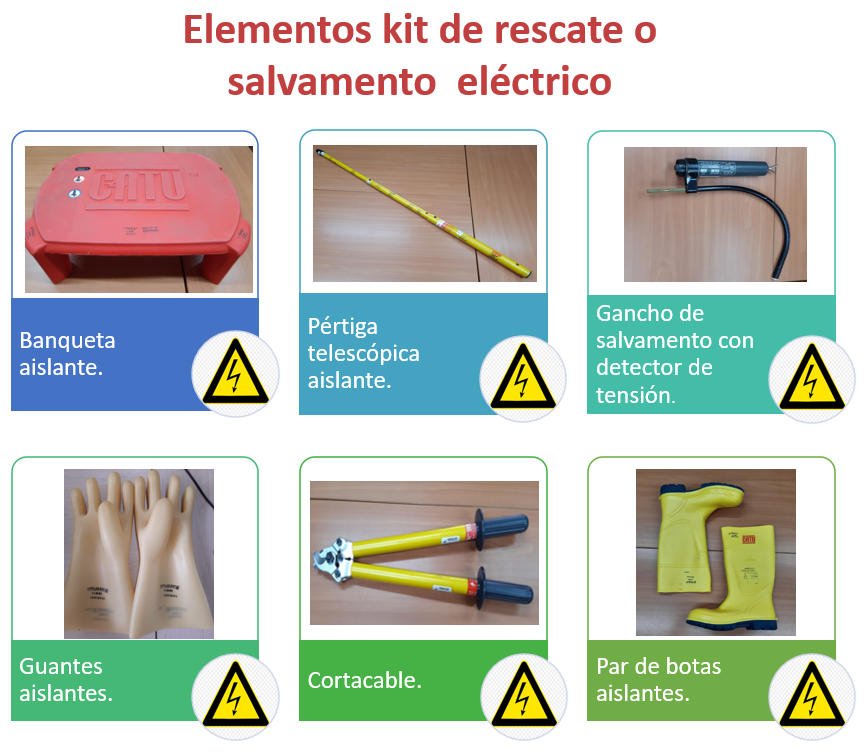Figura 3. Elementos mínimos de un kit de rescate eléctrico.
Fuente: Borets Services LTD. Sucursal Colombia (s.f.).

¡Importante!
Particularmente para los guantes aislantes, se debe tener en cuenta la siguiente recomendación del RETIE:
Los guantes aislantes, deben ser revestidos con guantes de protección mecánica y guantes de algodón en su interior.
(ítem 1; Numeral 19.2).
3.2 Uso del kit de rescate eléctrico
A través del siguiente vídeo podrá identificar la importancia de los elementos que hacen parte de un kit de rescate eléctrico y su adecuado uso en caso de presentarse una emergencia de tipo eléctrico.
Preste atención e identifique la importancia de aplicar las medidas de seguridad antes, durante y después de realizar una actividad eléctrica.
Reconozca la importancia de la actividad realizada por el trabajador que desempeña el rol de rescatista.
3.3 Inspecciones periódicas
En el marco de la seguridad de los trabajadores, toma importancia a nivel preventivo dar seguimiento permanente al correcto estado de los elementos del kit de rescate eléctrico.
Por lo anterior es necesario realizar jornadas de inspección antes del uso de cada uno de los elementos del kit de rescate eléctrico, con el fin de verificar su correcto funcionamiento e idoneidad.
Inspección de guantes dieléctricos:
En el siguiente boletín informativo podrá encontrar una orientación de cómo realizar una adecuada inspección de guantes dieléctricos.
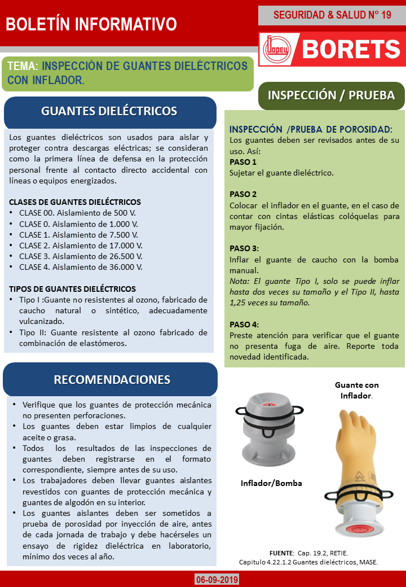Figura 4. Boletín de inspección de guantes dieléctricos.
Fuente: Borets Services LTD. Sucursal Colombia. RETIE. MASE. (s.f.).
Inspección de pértiga
Son varas telescópicas fabricadas en material aislante, las cuales permiten manipular elementos energizados desde una distancia determinada y evitar el contacto. Se utilizan para realizar tareas tales como: apertura de seccionadores, instalación de equipos de puesta a tierra, verificación de ausencia de tensión (acoplándole detectores de tensión), tijeras de corte, perfiladores, etc. No son aptas para permanecer bajo tensión durante períodos prolongados. Su longitud depende del nivel de tensión del equipo energizado, del trabajo a ser realizado y del alcance físico.
Las pértigas que deben utilizarse, serán las fabricadas de flexiglas o epoxiglas con capacidad dieléctrica de 245 KV/m a 328 KV/m (75 KV/pie a 100 KV/pie), que tengan revestimiento siliconado para protección contra la humedad.
Además, deben ser de excelente calidad y cumplir con las normas IEC855, OSHA y ASTM F711.
El documento Manejo Seguro Del Sistema Eléctrico en Ecopetrol (MASE) establece en el apartado 4.22.2.1 que: “antes de su empleo, debe verificarse que las pértigas se encuentren en buen estado, libres de rayones profundos y otros aspectos que podrían poner en peligro a quien las use”.
A continuación, se presentan, algunos tipos de pértigas.
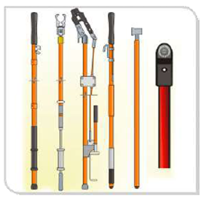Figura 5. Tipos de pértigas.
Fuente. MASE; 2016.
Inspección de pértiga
Tanto la banqueta como el tapete son aislantes, con la finalidad de cubrir el piso para protección de los trabajadores en lugares donde pueda existir el riesgo de una descarga. Vale la pena mencionar que la banqueta posee una ventaja sobre los tapetes, en zonas donde las superficies son húmedas o se generan depósitos de agua que podrían afectar las propiedades del elemento.
Cada pieza o elemento debe estar marcado claramente con el nombre del fabricante, el código de certificación, el tipo y la clase; esto para poder realizar trazabilidad a cada elemento.
Antes de su empleo, debe verificarse que las banquetas aislantes o tapetes dieléctricos se encuentren en buen estado, sin cortes, verificar que se encuentren libres de sustancias químicas y sin muestras de deterioro que puedan poner en riesgo la seguridad e integridad del trabajador.
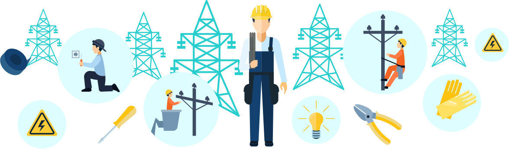Algunas recomendaciones contempladas en el ítem m, n, o, numeral 19.2 del RETIE son:
- Todo equipo de trabajo en tensión debe ser sometido a ensayos periódicos de acuerdo con las normas técnicas o recomendaciones del producto. A cada elemento de trabajo debe abrírsele y llenársele una ficha técnica.
- Los guantes aislantes deben ser sometidos a una prueba de porosidad por inyección de aire, antes de cada jornada de trabajo y debe hacérseles un ensayo de rigidez dieléctrica en laboratorio, mínimo dos veces por año.
- Para las mangas, cubridores, protectores, mantas, pértigas, tensores, escaleras y demás equipos, se debe hacer mínimo un ensayo de aislamiento al año.
3.4. Certificaciones
Es importante verificar las certificaciones de cada uno de los elementos del kit de rescate eléctrico previo a su uso. Esta información debe estar disponible en el lugar de trabajo para consulta.
| 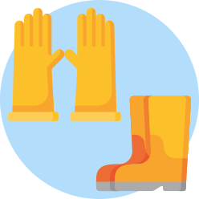 |
Para el caso de las botas dieléctricas y guantes aislantes, se debe verificar que cada código de certificación asignado a cada unidad de elemento esté vigente. Es decir, que el par de guantes contará con dos códigos diferentes de certificación (el código asignado al guante izquierdo será diferente al código asignado al guante derecho). Lo mismo ocurre con el par de botas. |
| 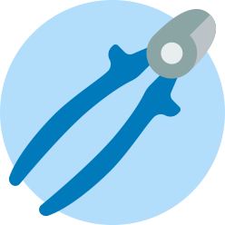 |
Para el caso de la cizalla o corta cable se debe verificar que las dos extensiones del elemento cuenten con códigos de certificación vigente. |
| 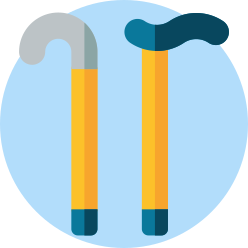 |
Para el caso de la pértiga se debe verificar que las tres extensiones del elemento cuenten con códigos de certificaciones vigentes. |
| 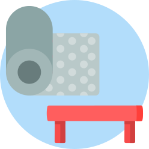 |
Los demás elementos como la banqueta o tapete y detector de tensión, contarán con un solo código de certificación por verificar. |
A continuación, se muestra un ejemplo de cómo se debe verificar una certificación.
Se debe identificar el código de certificación del guante izquierdo y del guante derecho.
Se debe verificar que dichos códigos se encuentren en el certificado emitido por el laboratorio que realizó el ensayo de rigidez dieléctrica de los guantes.
Figura 6. Verificación de certificación.
Fuente: Borets Services LTD. Sucursal Colombia (s.f.).
4. Procedimiento Operativo Normalizado - PON
¿Qué hacer en caso de una emergencia por accidente eléctrico con PMM (Permanent Magnet Motor)?
Lea detenidamente la lección por aprender que se muestra a continuación y analice la importancia de contar con un plan de emergencias.
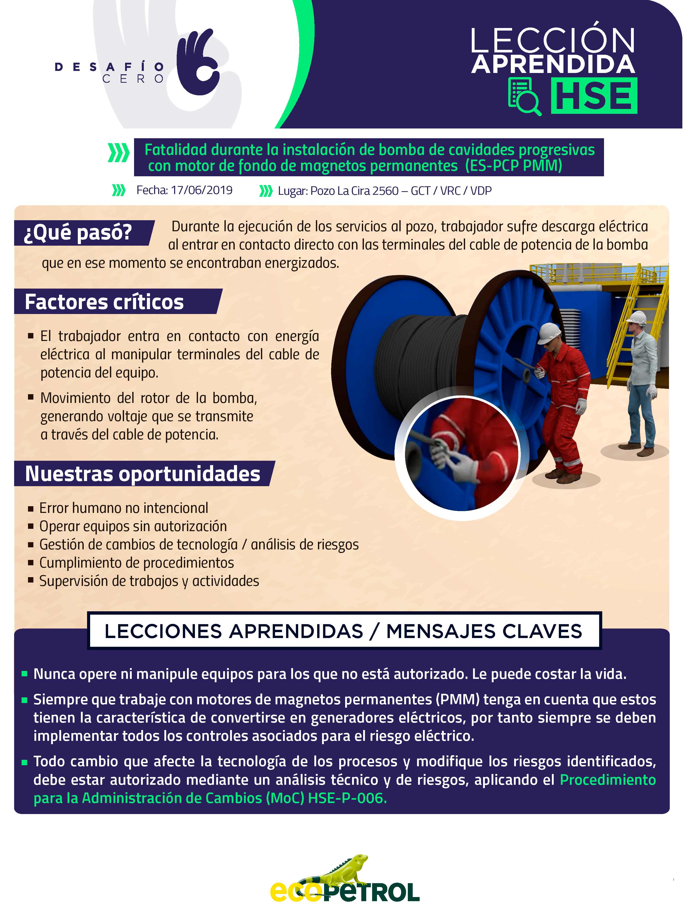Figura 7. Lección por aprender.
Fuente: Ecopetrol (2019).
Todo trabajo de alto riesgo o considerado como crítico, debe contar con un plan de emergencias donde se identifiquen los recursos y el paso a paso a seguir de las personas en caso de materializarse una emergencia.
Procedimiento Operativo Normalizado para actividades con PMM
Para las emergencias relacionadas con actividades eléctricas con PMM se recomienda contar con un PON como el que se describe a continuación:
Antes de la emergencia
- Realizar las inspecciones preoperacionales de los elementos del kit de rescate eléctrico.
- Realizar las inspecciones preoperacionales de los equipos y herramientas.
- Verificar la vigencia de las certificaciones de equipos, herramientas y elementos dieléctricos.
- Verificar que el personal que se programa para realizar actividades eléctricas cuenta con los soportes de competencias, según lo definido en el RETIE.
- Verificar que se cuente con las capacitaciones o cursos requeridos legalmente o los exigidos por cada operadora. Ejemplo: riesgo eléctrico, NFPA 70E, primeros auxilios, manejo de extintores.
- Contar con un plan de rescate.
- Disponer del kit de rescate eléctrico.
- Identificar los peligros y riesgos del área donde se realizará el trabajo y la actividad propia a desarrollar, diligenciar la documentación correspondiente y tramitar las aprobaciones con las autoridades de área para asegurar el Análisis de Riesgos (AR) o Análisis de Trabajo Seguro (ATS) por parte del emisor y ejecutor.
- Tramitar y aprobar, antes del inicio de las actividades el permiso de trabajo en el formato definido por el emisor y ejecutor de las actividades.
- Realizar charla preoperacional con todos los trabajadores involucrados en la actividad y con los trabajadores que se encuentren en el área, para divulgar el tipo de trabajo a desarrollar, responsables, peligros, riesgos, controles y aclarar inquietudes si existieran.
- Contar con procedimientos aprobados para realizar la actividad programada.
- Verificar corriente en el corto circuito para identificar si existe o no movimiento del motor en fondo (generación eléctrica en la Instalación del equipo BES).
- Uso adecuado de los Equipos de Protección Personal (EPP) dieléctricos.
- Socializar el MEDEVAC con el equipo de trabajo.
Durante la emergencia
- Activar el MEDEVAC.
- Se procede a eliminar el contacto, para lo cual se deberá cortar la corriente si es posible. En caso de que no sea posible se tendrá que desprender el accidentado y para esto se debe tomar las debidas precauciones (utilizar guantes dieléctricos, aislarse de la tierra, empleo de pértiga de salvamento, calzado dieléctrico y banqueta dieléctrica o tapete dieléctrico; como elementos mínimos) ya que el electrocutado es un conductor eléctrico mientras esté pasando por el cuerpo humano la corriente eléctrica.
- Uso del kit de rescate eléctrico.
- Brindar los primeros auxilios: liberada la víctima deberá intentarse reanimación inmediata, practicándole respiración artificial y el masaje cardiaco. Si está ardiendo se debe utilizar mantas o hacerle rodar por el suelo, en estos casos NUNCA se debe utilizar agua.
- Trasladar a la persona afectada al centro de salud más cercano, para atención médica y especializada.
- Verificar ausencia de tensión en las terminales del cable de potencia del sistema PMM.
- Aislar los terminales con cinta o con capuchón dieléctrico.
- Evacuar al total de trabajadores del lugar del evento y dirigirse al punto de encuentro definido.
Después de la emergencia
- Verificar el estado de salud de todas las personas que se encontraban en el área en el momento de la emergencia.
- Generar informe y comunicación detallada con los superiores.
- Recolectar la mayor cantidad de evidencias posibles para posteriormente realizar proceso de investigación.
- Definir el grupo investigador del evento.
- Realizar la investigación en donde se deben determinar las causas que generaron el accidente y los planes de acción necesarios para que no se vuelvan a presentar eventos iguales o similares.
- Hacer seguimiento a los correctivos definidos.
- Realizar los reportes correspondientes según el caso (Aseguradora de Riesgos Laborales -ARL-, operadoras, Ministerio).
Glosario
Aislante:aislante eléctrico es un material de baja conductividad eléctrica que puede ser tomado como no conductor o aislador. RETIE; Pág. 17.
BES:Bomba Electrosumergible.
Cizalla:es el nombre que recibe una herramienta manual, bastante similar a una tijera, pero que se diferencia por su tamaño y por la fuerza que puede ejercer para cortar diferentes materiales resistentes. (significados.com; s.f.)
Cubridores:elemento dieléctrico usado como protección frente al riesgo de tipo eléctrico.
Dieléctrico:ver aislante. RETIE; Pág. 21.
Epoxiglas:material compuesto por miles de fibras de vidrio impregnadas de resina epoxica.
EPP:Elementos de Protección Personal.
Flexiglás:material termoplástico transparente a base de petróleo típicamente fabricado en láminas. Es un material fuerte, resistente y liviano, con una mayor resistencia al impacto que el vidrio.
Inspección:conjunto de actividades tales como medir, examinar, ensayar o comparar con requisitos establecidos, una o varias características de un producto o instalación eléctrica, para determinar su conformidad. RETIE; Pág. 24.
Jornadas de Inspección:tiempo dedicado a la actividad de inspecciones. Estas pueden o no ser planeadas.
MASE:manual Manejo Seguro del Sistema Eléctrico en Ecopetrol..
MEDEVAC:es un sistema de traslado de pacientes desde una ubicación remota hasta un hospital especializado.
Pértiga telescópica:La pértiga telescópica con acoplamiento universal, fabricada con tubo de resina poliéster reforzado con fibra de vidrio. Está diseñada para proporcionar protección contra descargas eléctricas, aislamiento térmico para evitar quemaduras o lesiones.
Material complementario
| Nombre del documento o material. | Tipo de material. | Enlace del Recurso. |
|---|---|---|
| Ministerio de Minas y Energía, 2013, Resolución 90708. Reglamento Técnico de Instalaciones Eléctricas – RETIE. | ver | |
| Ecopetrol, (2016). Manual Manejo Seguro del Sistema Eléctrico en Ecopetrol (MASE). | ver | |
| Unidad administrativa especial dirección nacional de Bomberos. (2014). Resolución 0256 del 21 de octubre. | ver |
Referencias bibliográficas
Ecopetrol. (2016). Manual Manejo Seguro del Sistema Eléctrico en Ecopetrol (MASE).
Ecopetrol. (2019). Lección por aprender “Fatalidad durante la instalación de bomba de cavidades progresivas con motor de fondo de magnetos permanentes”.
Ministerio de Minas y Energía. (2013). Reglamento técnico de instalaciones eléctricas (RETIE). Resolución 90708.
Unidad administrativa especial dirección nacional de Bomberos. (2014). Resolución 0256.
Fotografías y vectores tomados de https://www.shutterstock.com/ y https://www.freepik.es/
Licencia Creative Commons
CC BY-NC-SA
Ver licencia.